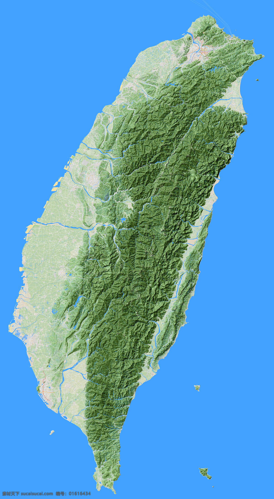

-
位於亞洲大陸東南沿海、太平洋西岸的臺灣，介於日本和菲律賓之間，正居於東亞島弧之中央位置，是亞太地區海、空運交通要道。總面積約為36,000平方公里。臺灣本島狹長，有高山、丘陵、平原、盆地等地形。中央山脈由南北貫穿全島，有豐富的山林之美，玉山主峰接近4000公尺，為東北亞第一高峰。
臺灣四面環海，擁有豐富的海洋生態。在沿海及離島都能親身體驗海洋世界之美。臺灣的九個國家公園，各自包含不同的自然景觀，無論是火山、高山、海洋或是濕地等地形，都能在其中領略不同海拔不同緯度所交織而成的自然風貌。
民以食為天的臺灣，街上隨處可見特色小吃，同時也是個小小的地球村，可以找到異國風情的美食，價位也都很親民。都會區的生活機能也很方便，超商提供24小時服務。搭乘大眾運輸工具方便又便宜，治安良好，臺灣人也十分樂於助人，在任何地方都能得到需要的幫助。
- 